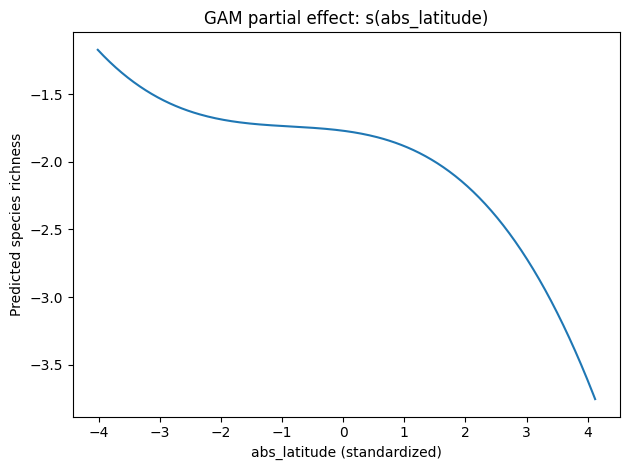
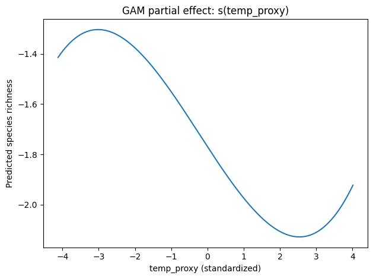
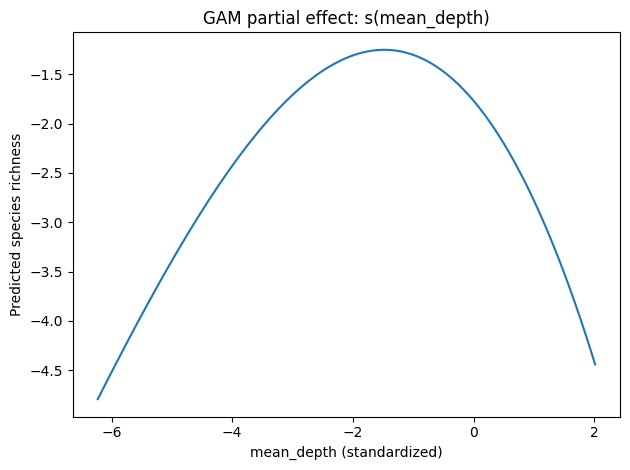
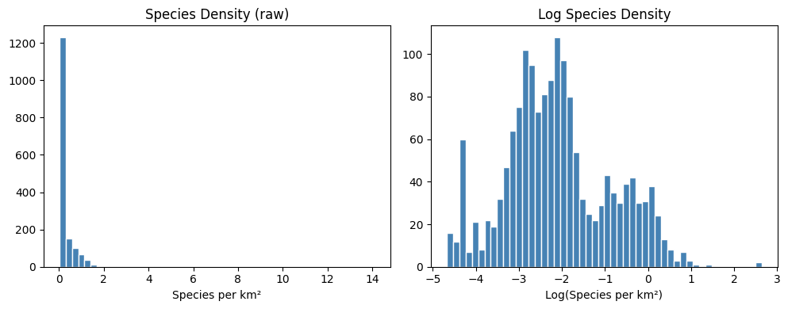
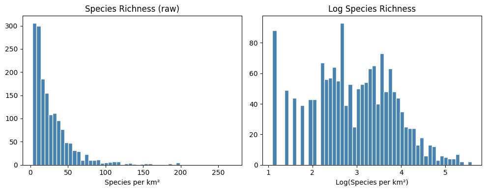
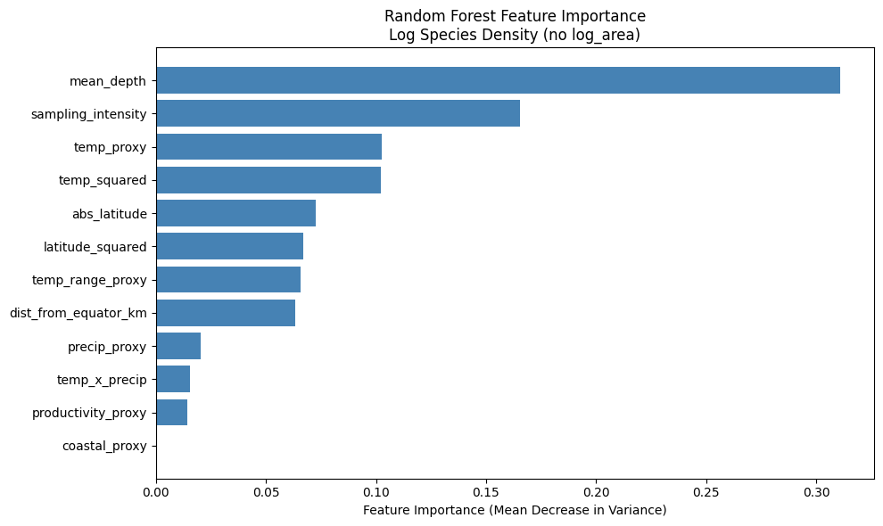
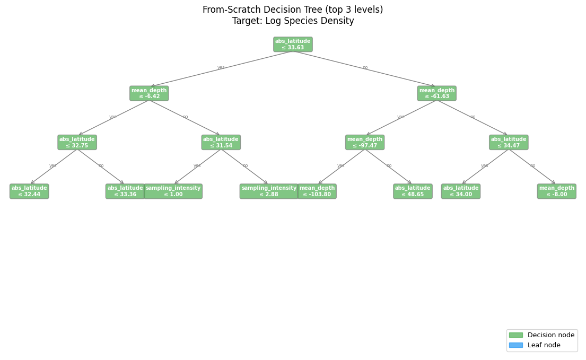
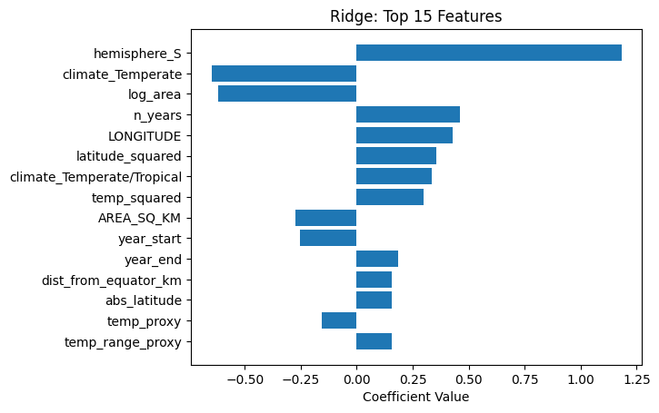
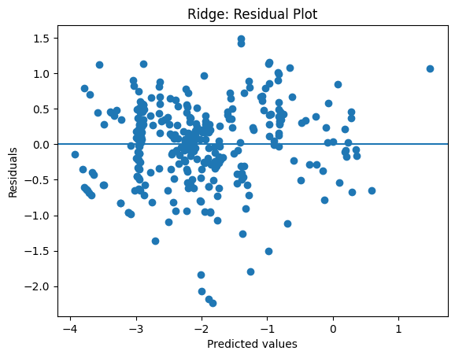

Method Subsection: GAM
Methods/GAMs.ipynbPartial-effect plots from the GAM notebook for each smooth predictor.



Interactive showcase of biodiversity modeling results from notebooks, with live sensitivity sliders for GAM spline count and Random Forest tree depth.
Summary from executed notebook outputs and processed data shapes.

Output from Methods/all_forest.ipynb.

Each method is listed individually. Sliders below provide interactive scenario views of how error metrics change with selected settings.
Best params: alpha = 1. Test R²: 0.7659, RMSE: 0.5687.
Best params: alpha = 0.001. Test R²: 0.7656, RMSE: 0.5690.
Best params: alpha = 0.001, l1_ratio = 0.8. Test R²: 0.7656, RMSE: 0.5690.
Baseline notebook metrics: RMSE 1.111, R² 0.104, Deviance Explained 0.062, AIC 3996.334.
Baseline: max_depth = 10. Test RMSE 0.755, R² 0.598. 10-fold CV RMSE 0.705, R² 0.661.
From-scratch tree: RMSE 0.927, R² 0.394. Sklearn tree: RMSE 0.818, R² 0.529.
Partial-effect plots from the GAM notebook for each smooth predictor.



Random forest feature/structure visuals and an exported tree visualization from the tree-based notebook.


Coefficient profile from regularized models (Ridge/Lasso/Elastic Net).


| Method | Target | RMSE | R² |
|---|---|---|---|
| Ridge | log_richness | 0.5687 | 0.7659 |
| Lasso | log_richness | 0.5690 | 0.7656 |
| Elastic Net | log_richness | 0.5690 | 0.7656 |
| Random Forest | log_density | 0.755 | 0.598 |
| Sklearn Tree | log_density | 0.818 | 0.529 |
| From-scratch Tree | log_density | 0.927 | 0.394 |
| GAM | richness | 1.111 | 0.104 |
Notebook figures from Methods/:
Source: Methods/GAMs.ipynb
Source: Methods/all_forest.ipynb
Source: Methods/Regression.ipynb